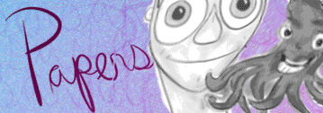
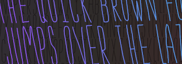
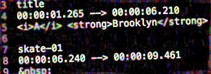
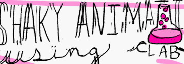

CSS True Titles

The True Detective opening titles are incredible.
This is my account of creating similar style titles with CSS.
Read it...
2000 Days

After an incredible 5+ years, I made the difficult decision
to move on from my position at Arc90 and Readability.
Read it...
Papersaver

I love drawing goofy things with Paper. I wanted a quick
way to put all those goofy drawings on the Web.
Read it...
Slenderman

Branching out and trying something new with this one.
I walk through the work that went into creating my first typeface.
Read it...
WebVTT Cuemarker

The Web Video Text Track format is easy enough to work
with, but marking cue times can be a bit of a chore. I
wrote a small tool to make it a little easier.
Read it...
CSS Shaky Animation

I've always loved the shaky animation style of a lot of
cartoons. This demo brings that style to the browser with
some CSS tricks and a little elbow grease.
View the demo...